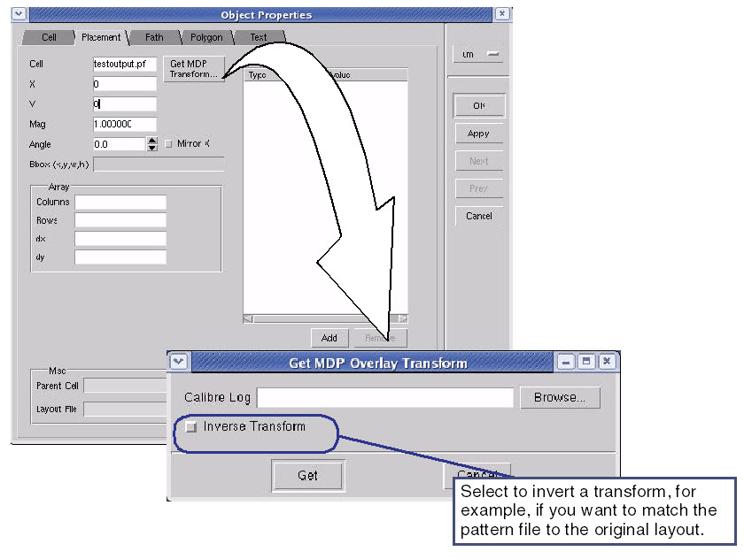
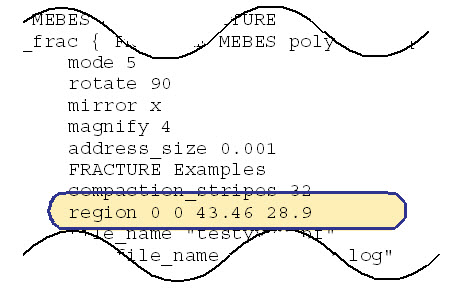

To compare fractured
data to the original layout database, you must compensate for any transformation
that occurred during fracturing so the two align properly.
Note:
When you merge
or overlay two layouts, where one of them is a Hitachi pattern file,
you must manually realign the data so that they overlay properly.
Refer to the section “Aligning Data Manually” for detailed information on
how to do this. This occurs because Hitachi data files allow you
to specify any location as the origin.
Do this by extracting the transform from the
fracture log file and applying it appropriately.
Prerequisites
The
fracture operation performed on a layout database
Fracture
log file
The
layout loaded into Calibre MDPview
Procedure
Make sure the top level cell
is displayed
With the viewer depth set
to 2 or higher so you can see the actual data, select the cell containing
the data to be transformed.
Open the Object Properties
dialog box: Object > Properties > Placement tab.1
Click Get MDP Transform to open the
Get MDP Overlay Transform dialog box.

Browse to select the fracture
log file name, or copy the pathname directly from the Fracture operation
in the rule file.
Select the correct type of
transform:
To transform the layout
database to match the pattern file generated from it, make sure
Inverse Transform is not selected.
To transform the pattern
file to match the layout database, selectInverse Transform.
Click Get to load the transform into
the Object Properties dialog box.
Click Apply to transform the data.
If you
have transformed the mask layer data before using it as input to
the Fracture command, you must make further adjustments, as described
in “Aligning Data Manually”.
Figure 1. Browsing the Fracture
Operation

Results
With the transformation data applied
to the mask layer data, you can now compare the fracture results
to the original layout.